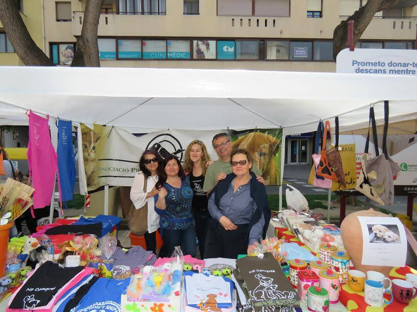

Si vols ajudar-nos a millorar, pots fer-te soci de la Protectora. Gràcies als donatius dels nostres socis podem realitzar el manteniment de les nostres instal·lacions i, a més a més, millorar la salut dels animals a través de revisions periòdiques, vacunacions, desparassitació, etc. Per a fer-te soci només cal omplir aquesta sol·licitud i fer-nos-la arribar a les nostres instal·lacions, o bé omple aquest formulari i ens l'envies..
En primer lloc, volem agrair a tots els voluntaris de la Protectora la seva dedicació i esforç per a fer més agradable la vida de tots els animals que tenim a les nostres instal·lacions. Sabem que vosaltres sou el veritable motor de la Protectora i sense la vostra ajuda no seria possible realitzar molts dels serveis que realitzem a l’actualitat per tal de millorar la qualitat de vida dels animals.
Ser voluntari és molt fàcil, només demanem que siguis major d'edat, que t’agradin els animals i que et comprometis a ajudar-nos el/s dia/es de la setmana que decideixis. És molt important entendre que fer de voluntari no és venir els dies que hem vingui de gust a passejar algún gos, sinó que és important poder comptar amb tú tant si plou com si fa sol, ja que els gossos necessiten la nostra ajuda tots els dies de l'any. Les feines que duen a terme el voluntariat són molt diverses: Cuidar els cadells i fer el seguiment de la vacunació. Ajudar en la neteja de les gàbies. Cuidar dels gats i alimentar els petits. Neteja de les casetes. Banyar, respatllar i tallar el pèl d’algun gos. I, sobretot, donar-los molt d’amor!
Per una altra banda, si ens vols ajudar mitjançant donatius de material, els principals articles que utilitzem són els següents:
Pinso: mitjançant aportacions personals.
Veterinari: per a les cures el que més s'utilitza són les gasses, “betadine”, guants de làtex, estisores, pipetes, collarets antipuces, xeringues i vacunes...
Neteja: no cal dir que gastem força lleixiu, rentavaixelles, sabó, bosses de brossa, escombres, fregones, galledes...
Roba: durant l’hivern utilitzem tot tipus de roba vella o mantes per a les casetes dels gats i dels gossos.
Altres: hi ha moltes coses que podem utilitzar, collarets i corretges de gos, rotllos de paper, joguines per als gats, casetes...
I per últim ajuda'ns en la nostra tasca de difusió, pots participar en les fires a les que assistim o simplement donar a conèixer la necessitat d'adoptar gossos i gats a les protectores ja que, malauradement, cada cop estàn més plenes d'animals abandonats.
Pots fer un donatiu puntual a aquest número de compte:
IBAN: ES36 0081 0104 7900 0155 4158
Swift Entitat: BSABESBB
Gràcies!
 facebook
facebook (+34) 653 073 713
(+34) 653 073 713